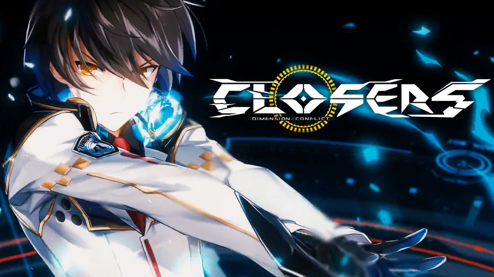

BLACK LAMBS
Black Lambs memiliki 5 anggota, diantaranya :
1. Lee Seha : Striker
Seha adalah karakter yang menggunakan senjata costume Gunblade. karakter ini sangat di baik dalam hal serangan atau Attack, dia juga memiliki damage pyhsical yang sangat baik. 2. Lee Seulbi
Seulbi adalah karakter yang sangat serius di alur cerita game ini. karakter ini menggunakan senjata costume dua pisau belati (daggers). Dia memiliki skill AoE attacks, yaitu skill area yang sangat baik. Karakter ini pun di bekali pisau yang melayang yang selalu ada di dekatnya. Bahkan pisau itu sendiri dapat di tambah saat memukul lawan dan skill Bit Generation System.
3. Seo Yuri
Yuri adalah karakter yang memiliki kekuatan yang seimbang antara Physical Attack dan Magical Attack. karakter ini menggunakan senjata sebuah pistol, dan katana.
4. J : Fighter
J adalah karakter yang belum diketauhi identitas yang sesungguhnya. dia menggunakan senjata knuckles. Dia pun juga sangat baik dalam hal Physical Attack. dan kelebihan yang dimiliki adalah tidak memakai MP. Tetapi dia memiliki kelemahan pada skill cooldown serta teralalu dekat saat bertarung. Jika tidak, J tidak dapat mengenai monsters tersebut.
5. Misteltein : Lancer
Mistel merupakan karakter yang menggunakan tombak besar (Large Spear). Karakter ini tidak juga kalah dengan Seulbi. Memiliki skill AoE Attack yang dapat membuat semua monster dapat di musnahkan di sekitarnya. Karakter ini mempunyai kelebihan, yaitu sangat lincah dan sangat sulit untuk mengenai karakter ini saat PVP.